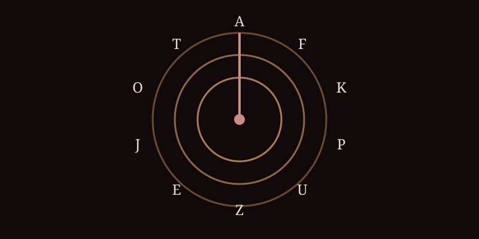
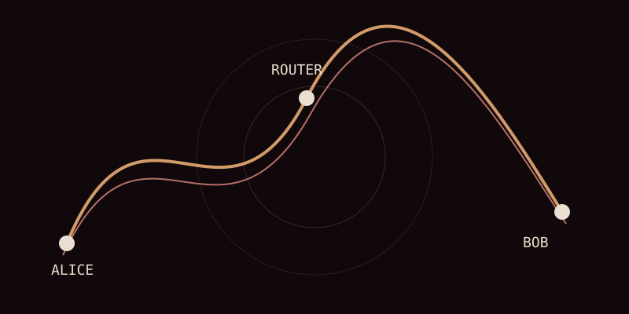
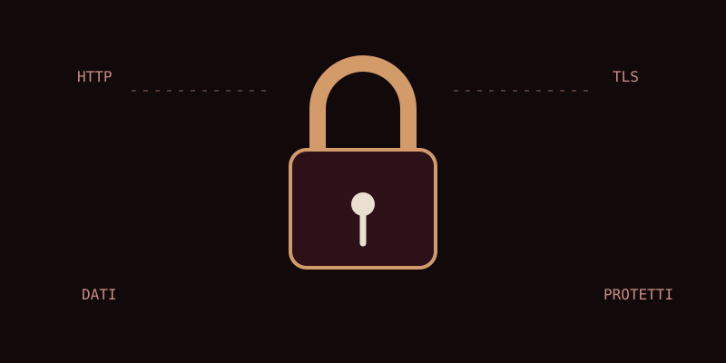

REPERTO ANIMATO · CIFRARI
La ruota gira. La chiave rimane.
Una piccola macchina visiva per ricordare l'idea fondamentale dei cifrari a sostituzione: il testo cambia quando cambia la regola con cui lo si attraversa.

Molto prima che esistessero le password, i server e le connessioni cifrate, gli esseri umani avevano già imparato una cosa fondamentale: un messaggio può avere due letture. Una per chi conosce la chiave. Un'altra per tutti gli altri.
Questa è la storia della crittografia: dai messaggi degli eserciti e dei sovrani alle matematiche moderne, fino al momento in cui quelle idee entrano nelle reti e rendono possibile comunicare attraverso un mondo che non possiamo controllare interamente.
Immaginiamo una strada antica. Un corriere parte da una città con una tavoletta, una lettera, un ordine militare. La strada è lunga. Le frontiere sono molte. E lungo il percorso ci sono occhi che non dovrebbero leggere.
Il problema della crittografia nasce qui, prima dei computer: come consegnare un'informazione a qualcuno senza consegnarla anche a chi riesce a intercettarla?
La risposta più intuitiva è trasformare il messaggio. Se il destinatario conosce il procedimento, può riportarlo alla forma originale. Per tutti gli altri, la sequenza di simboli deve diventare qualcosa di apparentemente incomprensibile.
Uno dei primi esempi celebri è il cifrario di Cesare. Le lettere dell'alfabeto vengono spostate di un certo numero di posizioni. Non è una protezione forte secondo gli standard moderni, ma introduce un'idea destinata a restare: una chiave permette di passare dal testo leggibile al testo cifrato e viceversa.
Con il passare dei secoli i cifrari diventano più complessi. Cambiano gli alfabeti, cambiano le chiavi, compaiono sostituzioni multiple, tabelle, sistemi polialfabetici. Ma ogni cifrario produce anche una sfida: trovarne il difetto.
È qui che nasce l'altra metà della disciplina: la crittanalisi. Non costruire un segreto, ma cercare il modo di romperlo. Frequenze delle lettere, errori umani, ripetizioni, messaggi intercettati: ciò che dovrebbe proteggere l'informazione lascia spesso tracce.
Il rapporto fra crittografia e crittanalisi diventa così una corsa continua. Ogni nuovo sistema cerca di eliminare la debolezza del precedente; ogni nuovo metodo di analisi cerca una crepa.
Nel Novecento questa corsa entra nell'era delle macchine. Enigma, le macchine elettromeccaniche, il lavoro di Bletchley Park e la matematizzazione della crittanalisi mostrano che il segreto non è più soltanto una questione di carta e inchiostro: è anche una questione di calcolo.
La stanza è silenziosa. Sul tavolo c'è un foglio. Non contiene una frase che si possa leggere, soltanto una successione di lettere che, a prima vista, sembra non voler dire nulla. È arrivata da lontano. Qualcuno l'ha scritta sapendo che avrebbe viaggiato attraverso mani, uffici, telefoni, telegrafi. Qualcun altro l'ha intercettata.
Il messaggio è stato protetto. Ma proteggere un messaggio non significa necessariamente renderlo invisibile. Significa trasformarlo. E ogni trasformazione, anche la più ingegnosa, può lasciare una traccia.
È da questa tensione che nasce la crittanalisi: non l'arte di costruire un segreto, ma quella di cercare il modo per capire un testo senza possedere la chiave. Per secoli crittografi e crittoanalisti si sono inseguiti così: uno costruisce una porta, l'altro cerca una fessura; uno cambia il meccanismo, l'altro cambia il modo di guardarlo.
Un testo naturale non è una sequenza casuale di simboli. Alcune lettere compaiono più spesso di altre. Alcune coppie sono comuni. Alcune parole ritornano. Ci sono articoli, preposizioni, desinenze, spazi, punteggiatura. Anche quando il significato viene nascosto, la struttura statistica della lingua può sopravvivere.
Immaginiamo un lungo messaggio italiano. Se in chiaro la lettera E compare molto più spesso di Q o Z, un cifrario di semplice sostituzione può trasformare le lettere ma non necessariamente cancellare quella sproporzione. Il crittoanalista può allora contare. Prima le lettere. Poi le coppie. Poi le sequenze più lunghe. Infine prova a formulare un'ipotesi e a vedere se quella stessa ipotesi spiega altre parti del messaggio.
Questa è una delle idee più belle della crittoanalisi classica: un messaggio può essere segreto e allo stesso tempo essere statistico. Il testo cifrato sembra rumore, ma non è necessariamente rumore puro.
Un sistema può essere matematicamente ingegnoso e tuttavia fallire perché qualcuno lo usa male. Una chiave viene scelta troppo corta. Una procedura viene ripetuta. Un operatore commette lo stesso errore. Una formula compare due volte. Un messaggio contiene una parola prevedibile. Un destinatario risponde seguendo una convenzione che permette all'avversario di confrontare due testi.
La crittoanalisi impara così a non guardare soltanto il cifrario. Guarda il contesto. Chi invia? A chi? Quando? Quante volte? Con quale lunghezza? Cosa è probabile che venga scritto all'inizio di un messaggio militare? Quali formule si ripetono? Quali parole sono quasi inevitabili?
Non sempre bisogna leggere tutto il messaggio. A volte basta capire che cosa potrebbe esserci scritto in un punto preciso.
Il cifrario di Cesare usa un unico spostamento. Se sposti ogni lettera dello stesso numero di posizioni, la distribuzione delle lettere rimane riconoscibile. Il passo successivo consiste nel non usare sempre lo stesso spostamento.
Con Vigenère, una parola chiave determina una sequenza di spostamenti. La stessa lettera del testo in chiaro può diventare lettere diverse in punti diversi del messaggio. Il paesaggio statistico si fa più difficile da leggere.
La chiave non cancella la struttura della lingua: la distribuisce su più alfabeti. E proprio la ripetizione della chiave può, in determinate condizioni, diventare una nuova traccia.
È una lezione ricorrente nella storia della crittografia: una soluzione più sofisticata non elimina necessariamente il problema; spesso lo sposta.
Nel Novecento i messaggi diventano moltissimi. Non sono più soltanto lettere di diplomatici. Sono ordini, comunicazioni navali, rapporti, messaggi radio, istruzioni operative. Le macchine permettono di cifrare rapidamente; proprio per questo, dall'altra parte, serve un modo altrettanto sistematico per analizzare ciò che viene intercettato.
Qui entra in scena Enigma. Una macchina elettromeccanica che combina tastiera, rotori, riflettore e collegamenti sul pannello. Ogni pressione produce una trasformazione dipendente dallo stato della macchina; dopo la pressione, i rotori avanzano. La stessa lettera può quindi produrre risultati diversi in momenti diversi.

La complessità non significa però invulnerabilità. La macchina fa parte di un sistema operativo umano: procedure, messaggi, impostazioni, codebook, abitudini. Ed è proprio l'insieme di macchina e comportamento che i crittoanalisti cercano di comprendere.
A Bletchley Park il problema viene trasformato in un lavoro organizzato. Intercettare. Ordinare. Confrontare. Formulare ipotesi. Cercare configurazioni compatibili. Verificare. Ripartire.
Hut 8, in particolare, fu coinvolta nella decodifica del traffico navale Enigma; il lavoro comprendeva l'analisi dei messaggi intercettati e l'uso delle bombes, macchine elettromeccaniche progettate per automatizzare la verifica di ipotesi sulle impostazioni giornaliere. Le descrizioni storiche di Historic England ricordano che queste macchine potevano esplorare un numero enorme di configurazioni, trasformando una ricerca impraticabile a mano in una procedura meccanizzata.
È qui che la storia della crittografia si salda con quella dell'informatica: non perché la macchina “pensi” al posto dell'uomo, ma perché l'uomo ha bisogno di automatizzare una parte del ragionamento.
Questo è il passaggio che spesso viene raccontato troppo velocemente. La guerra non produce semplicemente “macchine che decifrano”. Produce una nuova mentalità. Il testo cifrato diventa un insieme di dati da classificare. Le ipotesi diventano procedure. Le procedure diventano algoritmi. Il tempo necessario per verificare un'idea diventa una grandezza fondamentale.
Un crittoanalista può avere un'intuizione brillante. Ma se deve verificare manualmente milioni di possibilità, l'intuizione non basta. Una macchina può invece ripetere una procedura senza stancarsi. Il lavoro cambia natura: l'essere umano cerca il modello, la macchina esplora rapidamente lo spazio delle possibilità.
La parte più affascinante è che la sicurezza perfetta non esiste quando il sistema viene usato da persone. Una macchina può avere moltissime configurazioni; un operatore può comunque ripetere una procedura. Un messaggio può contenere una formula prevedibile. Un'informazione apparentemente insignificante può diventare una “crib”, un indizio utile a formulare una prova.
Per questo la crittanalisi è una disciplina che mescola matematica, linguistica, statistica, logica, tecnologia e conoscenza del comportamento umano.
Osserva questo testo senza conoscere la chiave:
QEB NRFZH YOLTK CLGNon cercare subito di decifrarlo. Prima chiediti: quali informazioni possiedi già? La lunghezza? Gli spazi? Le ripetizioni? La frequenza? Una parola probabile? Il primo passo della crittoanalisi è imparare a fare domande al testo.
Alla fine di questo percorso il punto non è ricordare una lista di cifrari. È capire perché la storia procede in una certa direzione. Ogni volta che un sistema diventa più difficile da leggere, la crittoanalisi cerca una nuova rappresentazione del problema. Ogni volta che l'analisi diventa troppo lenta, entra in gioco una macchina. Ogni volta che una macchina amplia lo spazio delle possibilità, il crittografo cerca una nuova matematica.
È la stessa corsa che ritroveremo quando i computer cominceranno a comunicare attraverso una rete. Perché, a quel punto, il problema cambierà ancora.
La domanda conduce direttamente al capitolo successivo: il problema della chiave.
Ora torniamo alla città della rete. I computer hanno imparato a comunicare. I pacchetti attraversano router. I protocolli stabiliscono come devono essere formati i messaggi. Ma c'è una domanda che la rete, da sola, non può ignorare:
La risposta non è una singola tecnologia. È una successione di strati. La crittografia viene incorporata nei protocolli e nei servizi che usiamo per comunicare: posta elettronica, connessioni Web, accesso remoto, reti wireless, applicazioni.
Con SSL, e poi con TLS, la comunicazione fra client e server può essere protetta attraverso una connessione cifrata. Il protocollo non si limita a nascondere i dati: deve anche affrontare autenticazione, integrità e negoziazione delle chiavi.
Quando oggi vediamo HTTPS, vediamo il risultato di questa storia: HTTP che viaggia attraverso una protezione crittografica basata su TLS.
Immaginiamo due persone separate da una stanza piena di estranei. Vogliono avere un segreto comune. Ma se l’unico canale disponibile può essere ascoltato?
Per la crittografia simmetrica il problema è enorme: prima di cifrare bisogna già possedere la chiave. La rete rende la domanda quasi paradossale: come posso consegnarti la chiave senza consegnarla anche a chi ascolta?
Nel 1976 Whitfield Diffie e Martin Hellman pubblicano una soluzione concettualmente nuova. Non mandano il segreto. Costruiscono un procedimento matematico che permette a due interlocutori di arrivare allo stesso segreto partendo da valori che possono essere osservati anche da un intercettatore.
L’idea usa proprietà matematiche che rendono facile compiere un’operazione in una direzione e difficile invertirla senza l’informazione privata. È una delle intuizioni che cambiano la geometria della fiducia.
La crittografia a chiave pubblica apre una seconda porta. Se posso pubblicare una chiave senza perdere il segreto, posso immaginare un sistema nel quale chiunque possa iniziare una comunicazione con me.
Ron Rivest, Adi Shamir e Leonard Adleman costruiscono nel 1977 un sistema che diventerà noto come RSA. La sua eleganza sta nella separazione fra due chiavi matematicamente collegate: una può essere resa pubblica, l’altra deve rimanere privata.
Questa separazione cambia anche il significato della firma. Una chiave privata può produrre una firma verificabile con la chiave pubblica corrispondente.
Questa distinzione entrerà nell’e-mail, nelle firme digitali, nei certificati e nei protocolli del Web.
Quando Phil Zimmermann distribuisce PGP, la crittografia forte arriva nelle mani di un utente comune.
La domanda diventa anche culturale: chi deve poter usare la crittografia?
PGP combina crittografia simmetrica e asimmetrica: il contenuto viene cifrato con una chiave di sessione, mentre la chiave pubblica del destinatario protegge quella chiave. PGP può inoltre firmare digitalmente i messaggi.
La crescita della crittografia porta una domanda difficile: se tutti possono cifrare, che cosa succede quando le autorità hanno bisogno di accedere a una comunicazione?
Il Clipper Chip fu proposto negli Stati Uniti come sistema di cifratura telefonica con un meccanismo di accesso governativo associato alla key escrow.
Il dibattito mostra che la sicurezza non è soltanto matematica: è anche progettazione di sistemi e distribuzione del potere. Una porta segreta implica decidere chi possiede la chiave della porta.
Il Web porta la crittografia davanti a milioni di persone che non sanno nemmeno che esista. Una password viene digitata. Un modulo viene inviato.
SSL e poi TLS costruiscono uno strato nel quale client e server possono negoziare parametri, verificare l’identità del server e stabilire chiavi di sessione.
Quando compare HTTPS, dietro una piccola sigla si incontrano decenni di storia.
La storia non finisce con TLS. La crittografia deve continuamente confrontarsi con nuovi strumenti e nuovi limiti del calcolo.
Il protocollo BB84 mostra una prospettiva quantistica sulla distribuzione di chiavi; l’algoritmo di Shor, proposto nel 1994, mostra perché i computer quantistici potrebbero mettere in difficoltà alcune ipotesi matematiche della crittografia a chiave pubblica.
Una piccola macchina visiva per ricordare l'idea fondamentale dei cifrari a sostituzione: il testo cambia quando cambia la regola con cui lo si attraversa.

Il problema moderno non è soltanto trasformare il messaggio: è stabilire un segreto condiviso mentre i dati stanno viaggiando.

Quando una pagina usa HTTPS, dietro il gesto quotidiano del browser c'è un intero sistema che protegge la comunicazione.

Queste tre domande attraversano la storia della crittografia e ritornano, con strumenti diversi, nei protocolli delle reti.
Frequenze, ripetizioni, errori e abitudini possono rivelare informazioni anche quando il testo visibile è stato trasformato. La storia dei cifrari è anche la storia di chi impara a cercare ciò che il cifrario non riesce a nascondere.
La svolta degli anni Settanta cambia la domanda: non basta più avere un cifrario sicuro; bisogna trovare un modo per iniziare una conversazione sicura senza aver già scambiato un segreto attraverso un canale fidato.
La crittografia moderna serve anche a dimostrare che un messaggio proviene dalla controparte attesa e che non è stato modificato. Da qui il ruolo delle firme digitali e dei certificati.
Su una rete radio il mezzo è condiviso e l'ascolto può sembrare ancora più naturale. La sicurezza deve quindi accompagnare il dato anche quando non esiste un cavo che delimita fisicamente il percorso.
PGP porta la cifratura forte nella disponibilità degli utenti e rende evidente una tensione che tornerà più volte: chi deve possedere le chiavi e chi deve poter leggere una comunicazione?
Alla fine il risultato migliore è quello che non richiede all'utente di pensare continuamente alla crittografia: il browser, il server e i protocolli svolgono il lavoro sotto la superficie.
La cosa più interessante è che la crittografia funziona davvero quando smette di farsi notare. Digiti un indirizzo. Il browser contatta un server. Una connessione viene stabilita. Le chiavi vengono negoziate. I dati vengono protetti.
Dietro quel gesto quotidiano ci sono decenni di ricerca: cifrari antichi, crittanalisi, macchine, matematica, chiavi pubbliche, firme digitali, protocolli e standard.
Il Web non ha inventato la crittografia. La rete non ha inventato il segreto. Ma Internet ha reso il problema universale: milioni di persone devono poter comunicare con sistemi che non hanno mai visto e che si trovano dall'altra parte del pianeta.
Per questo la storia della crittografia diventa, a un certo punto, inseparabile dalla storia delle reti.
Questa città non è fatta soltanto di algoritmi. È fatta di persone. Alcune hanno inventato strumenti, altre hanno messo in discussione sistemi, altre ancora hanno portato la crittografia dentro tecnologie che oggi consideriamo normali.
La prossima porta della città è già visibile: la crittografia quantistica, le nuove minacce e il problema di continuare a proteggere informazioni in una rete che non smette mai di cambiare.
← TORNA ALLA PLANIMETRIA DELLA CITTÀLa sicurezza entra nella storia della rete molto prima dei moderni lucchetti verdi del browser. Ogni volta che un messaggio attraversa un mezzo condiviso nasce una domanda: chi altro può leggerlo? Se il canale è fisicamente accessibile, il segreto non può dipendere dal filo. Deve dipendere da una trasformazione che renda il messaggio incomprensibile a chi non possiede ciò che serve per recuperarlo.
La crittografia antica parte spesso da trasformazioni relativamente semplici. Sostituzioni, trasposizioni, alfabeti segreti. Ma ogni sistema deve affrontare un avversario che può osservare i messaggi, raccogliere esempi e cercare regolarità. La storia della crittoanalisi è quindi anche una storia di occhi: qualcuno guarda il testo cifrato e prova a capire ciò che non dovrebbe capire.
Con l'arrivo dei computer la scala cambia. Una macchina può provare milioni di possibilità molto più rapidamente di una persona. Questo costringe la crittografia a diventare matematica, ma non elimina il problema umano. Le chiavi devono essere generate e custodite. Le identità devono essere verificate. Un algoritmo perfetto usato con una chiave esposta rimane un sistema insicuro.
La grande svolta della crittografia a chiave pubblica introduce un paradosso elegante: posso rendere pubblico qualcosa che serve a cifrare, senza rendere pubblico ciò che serve a decifrare. Diffie-Hellman permette di costruire un segreto condiviso attraverso un canale pubblico; RSA trasforma la matematica dei problemi difficili in un sistema di chiavi; PGP porta queste idee nella posta elettronica; SSL/TLS le inserisce nella conversazione quotidiana tra browser e server.
E poi compare un'altra dimensione: la sicurezza non riguarda soltanto la segretezza. Riguarda autenticità, integrità, identità e disponibilità. Una firma digitale deve permettere di verificare chi ha prodotto un documento e se è stato modificato. Un certificato deve aiutare il browser a capire con chi sta parlando. Un sistema disponibile deve resistere a errori e attacchi. La parola 'sicurezza' è quindi troppo piccola per descrivere tutto ciò che la rete deve proteggere.
Il punto che attraversa queste pagine è proprio questo: ogni soluzione crea nuove domande. Se cifro un messaggio, come scambio la chiave? Se rendo pubblica la chiave, come so che appartiene davvero a quella persona? Se proteggo il canale, come verifico il server? Se posso verificare il server, chi verifica la mia identità? La storia della sicurezza non arriva a una porta finale. Costruisce porte, chiavi e nuove serrature una dopo l'altra.
Chi può leggere? Chi possiede la chiave? Chi può distribuirla senza consegnare il segreto?
Chi ha scritto il messaggio? È stato modificato? Come lo dimostro senza fidarmi soltanto del testo?
Con chi sto parlando davvero? Il lucchetto protegge il viaggio, ma l'identità deve essere verificata.
LAB · Prova a distinguere quattro obiettivi prima di scegliere una soluzione: confidenzialità, integrità, autenticità, disponibilità. Una stessa tecnologia può contribuire a uno di questi obiettivi senza risolvere gli altri.
OpenPGP · storia di PGP
Fonte e materiali di approfondimento →Il video è un materiale esterno; la pagina conserva i contenuti e le attività anche se il collegamento non è disponibile.
Il segreto, da solo, non basta.
Un messaggio può essere cifrato e restare comunque vulnerabile. La chiave può essere copiata. Il destinatario può essere impersonato. Il contenuto può essere modificato durante il viaggio. Il server può essere falso. La macchina dell'utente può essere compromessa. La sicurezza nasce quando impariamo a vedere tutti questi problemi separatamente.
Immaginiamo di essere in una stanza piena di persone. Sul tavolo passa un foglio. Non possiamo leggere il testo, ma possiamo osservare quanto è lungo, quante volte compare un certo simbolo, se due righe hanno la stessa struttura, se alcune parole sembrano ripetersi. La crittoanalisi comincia spesso proprio da questa pazienza.
Il linguaggio naturale è pieno di ridondanza. Non scegliamo le lettere con la stessa probabilità. Alcune combinazioni sono frequenti, altre quasi impossibili. Un sistema di cifratura deve fare i conti con questa struttura, altrimenti l'avversario può sfruttarla.
Per questo la storia dei cifrari è una storia di miglioramenti successivi. Quando una regola permette un'analisi semplice, si cerca di spezzare quella regolarità. Quando il sistema diventa più complesso, aumenta il bisogno di macchine, di matematica e di tempo di calcolo.
Una semplice trasformazione può cambiare l'aspetto delle lettere senza eliminare tutte le tracce lasciate dalla lingua.
Quando due persone si trovano nella stessa stanza, la chiave può essere consegnata di persona. Ma una rete globale elimina proprio quella comodità. La prima conversazione con uno sconosciuto deve essere sicura prima ancora che esista un canale sicuro.
La crittografia a chiave pubblica cambia il problema. Una parte dell'informazione può essere resa pubblica; un'altra deve restare segreta. Diffie-Hellman mostra come due interlocutori possano arrivare a un segreto condiviso senza trasmetterlo direttamente. RSA introduce una coppia di chiavi legata a una struttura matematica differente. Da quel momento la crittografia diventa anche una disciplina della fiducia.
La storia di PGP è importante perché sposta la crittografia da una tecnologia utilizzata soprattutto da governi e grandi organizzazioni verso uno strumento che può essere installato da un singolo utente. La domanda non è più soltanto «come proteggiamo una comunicazione?», ma anche «chi deve avere il diritto di proteggere una comunicazione?».
Phil Zimmermann sviluppa PGP nel 1991. Il progetto combina cifratura a chiave pubblica e cifratura simmetrica: la chiave pubblica serve a proteggere la chiave di sessione, mentre il messaggio viene cifrato con un algoritmo simmetrico più adatto a gestire grandi quantità di dati. È un esempio importante di come sistemi diversi possano collaborare invece di competere.
La storia diventa ancora più interessante quando la distribuzione del software incontra le regole sull'esportazione della crittografia negli Stati Uniti. La vicenda mostra che la sicurezza informatica non vive soltanto nei laboratori: entra nel diritto, nella politica, nella libertà di comunicazione e nelle scelte individuali.
Il messaggio deve poter essere letto dal destinatario previsto e non dagli osservatori del canale.
Il destinatario deve poter rilevare una modifica del contenuto durante il viaggio.
Bisogna avere un modo per verificare con chi si sta parlando e da chi proviene un messaggio.
Un sistema sicuro deve anche poter continuare a offrire il servizio quando subisce errori o attacchi.
Scegli mentalmente l'obiettivo prima di scegliere la tecnologia.
La traccia aspetta il primo gesto.
La storia continua nei documenti di OpenPGP e nei materiali dedicati alla sicurezza delle comunicazioni.
Una porta per approfondire la storia di PGP e delle sue evoluzioni.
Apri l'archivio →